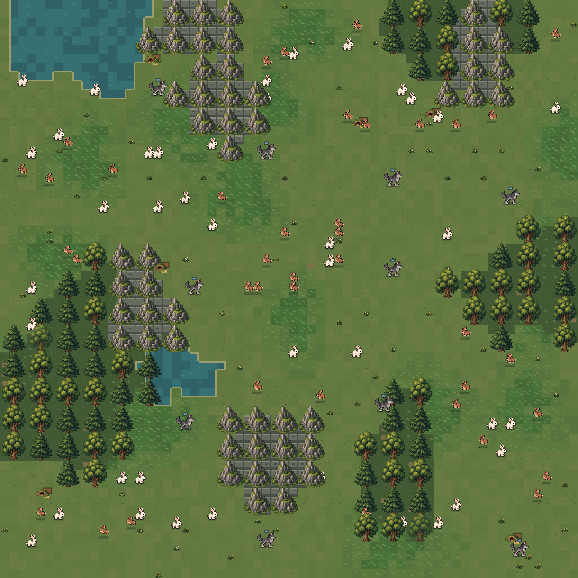

Jevolution
First place, TypeSafe AI Jev hackathon
A spatial predator-prey habitat where each rabbit and wolf decides for itself. Built with Nikhil Hooda and Utkarsh Gupta. First place at TypeSafe AI’s first Jev hackathon, from 55 teams, and $4,000 in Cognition Devin credits.
The world keeps moving while a model is still deciding. Animals see only what is nearby, spend energy, and rabbits can leave a short signal. Offspring inherit a few traits. The model weights stay fixed. The paper separates the world, the scheduler, the controller, and the record, so a run can be replayed and a claim checked. Across six paired habitats, turning signals on did not resolve whether more rabbits survive.
TypeScript · Jev · Claude
